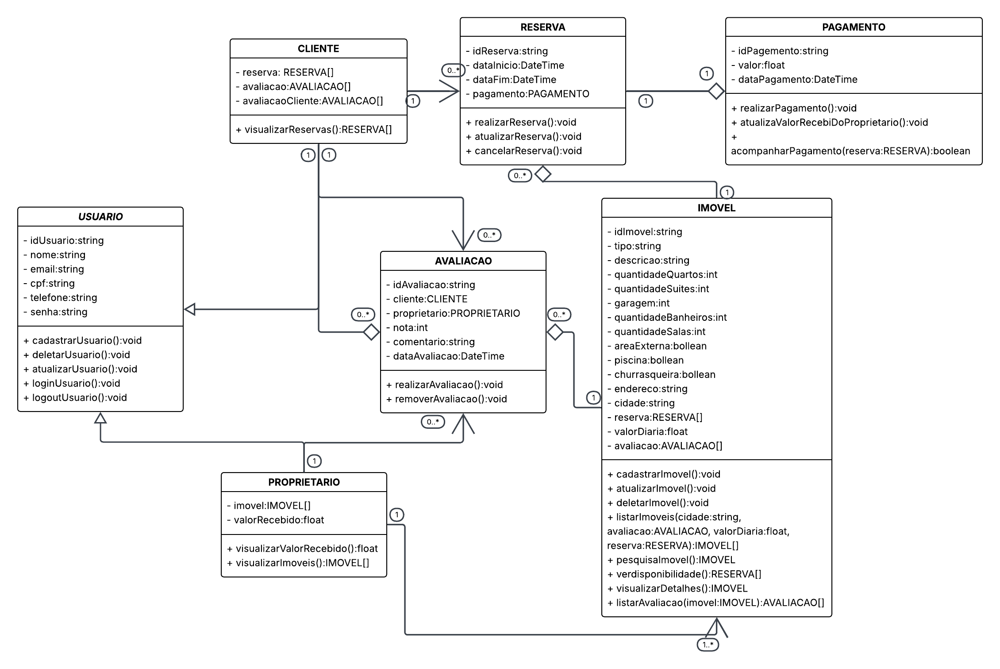

Modelagem
Diagrama de Classes
Este diagrama de classes UML representa a estrutura de dados e as relações entre as entidades principais do sistema "Estadia Já". Ele detalha as classes, atributos e métodos, oferecendo uma visão clara de como os objetos se interagem no sistema.

Descrição das Classes
A seguir, uma breve descrição de cada classe no diagrama:
-
USUARIO: Representa a classe mãe dos meus tipos de usuários.
- Atributos:
idUsuario,nome,email,cpf,telefone,senha. - Métodos:
cadastroUsuario(),deletarUsuario(),atualizarUsuario(),loginUsuario(),logoutUsuario().
- Atributos:
-
CLIENTE: Representa os usuário que busca e aluga imóveis.
- Atributos:
reservas. - Métodos:
visualizarReservas().
- Atributos:
-
PROPRIETARIO: Representa os usuário disponibiliza imóveis para aluguel.
- Atributos:
imovel,valorRecebido. - Métodos:
visualizarValorRecebido(),visualizarImoveis().
- Atributos:
-
RESERVA: Gerencia as reservas de imóveis feitas pelos clientes.
- Atributos:
idReserva,dataInicio,imovel,cliente,dataFim,pagamento. - Métodos:
realizarReserva(),atualizarReserva(),cancelarReserva().
- Atributos:
-
PAGAMENTO: Detalha a transação financeira de uma reserva.
- Atributos:
idPagamento,valor,dataPagamento. - Métodos:
realizaPagamento(),acompanharPagamento().
- Atributos:
-
IMOVEL: Representa as propriedades disponíveis para aluguel.
- Atributos:
idImovel,tipo,enderecao,descricao,quantidadeQuartos,quantidadeSuites,garagemm,quantidadeBanheiros,quantidadeSalas,areaExterna,piscina,churrasqueira,cidade,reserva,valor. - Métodos:
cadastrarImovel(),atualizarImovel(),deletarImovel(),listarImoveis(),pesquisarImovel(),verDisponibilidade(),visualizarDetalhes()``visualizarAvaliacoes().
- Atributos:
-
AVALIACAOCLIENTE: Representa as avaliações dos imóveis.
- Atributos:
idAvaliacaoImovel,cliente,imovel,nota,comentario,dataAvaliacao. - Métodos:
realizarAvaliacao(),removerAvaliacao().
- Atributos:
-
AVALIACAOIMOVEL: Representa as avaliações do cliente.
- Atributos:
idAvaliacaoCliente,cliente,imovel,nota,comentario,dataAvaliacao. - Métodos:
realizarAvaliacao(),removerAvaliacao().
- Atributos:
Relações entre as Classes
- CLIENTE e RESERVA: Um cliente pode ter múltiplas reservas, mas cada reserva pertence a um único cliente (relação de 1 para N).
- RESERVA e PAGAMENTO: Cada reserva tem um e somente um pagamento associado (relação de 1 para 1).
- PROPRIETARIO e IMOVEL: Um proprietário pode ter muitos imóveis, e cada imóvel pertence a um proprietário (relação de 1 para N).avaliações, mas cada avaliação é feitas por um proprietario(relação de 1 para N).
- IMÓVEL e RESERVA: Um imóvel pode ser objeto de várias reservas, e cada reserva se refere a um único imóvel (relação de 1 para N).
- RESERVA e AVALIACAOIMOVEL: Uma reserva pode ser avaliada uma vez e uma avaliação se refere a uma reserva.
- RESERVA e AVALIACAOCLIENTE: Uma reserva pode ser avaliada uma vez e uma avaliação se refere a uma reserva.
Link para o Diagrama
Você pode acessar e editar este diagrama de classes diretamente no Lucidchart através do link abaixo:
Diagrama de CLasses no LucidChart
Histórico de Commits
| Data | Tipo | Descrição |
|---|---|---|
| 11/09/2025 | feat | Adiciona o diagrama de classes e a sua descrição |
| 04/10/2025 | fix | Corrige as relações entre as classes do diagrama de classes |